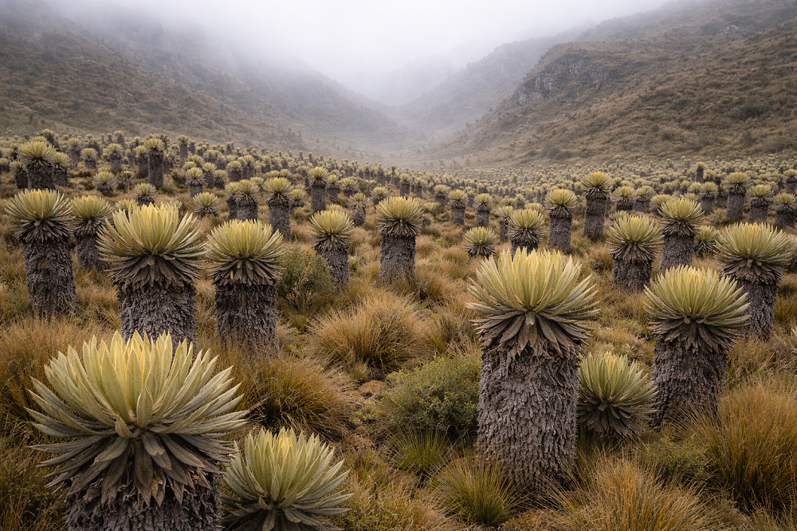

Inicio > Crónicas de un biblio-naturalista > Archivística ecosemiótica desde el bosque nublado (06)
Archivística ecosemiótica desde el bosque nublado (06)
Los frailejones saben esperar
La lógica de la preservación lenta
Retención en un entorno severo
Los ecosistemas de páramo de gran altitud, que ocupan la zona de transición entre el bosque nuboso andino y la línea de nieve, se caracterizan por una variabilidad ambiental extrema. La radiación solar es intensa durante el día, las temperaturas descienden rápidamente por la noche y la disponibilidad de agua fluctúa entre la saturación y la evaporación. En semejante régimen climático, ciertas especies vegetales han desarrollado estrategias que no están orientadas a un crecimiento rápido sino a una retención cuidadosa. Entre las más distintivas se encuentran los frailejones (género Espeletia y taxones relacionados), grandes plantas en roseta cuyos tallos gruesos y hojas densamente pubescentes capturan la humedad atmosférica y ayudan a regular el movimiento del agua dentro del ecosistema de páramo.
Los frailejones captan la lluvia y la niebla dentro de sus densas rosetas y contribuyen a ralentizar el movimiento del agua en el paisaje. Sus hojas están cubiertas de finos pelos que reducen la evaporación e interceptan la humedad atmosférica, mientras que la estructura vegetal que forman ayuda a regular la llegada del agua al suelo. Estudios hidrológicos han demostrado que este tipo de vegetación, combinada con los suelos altamente orgánicos característicos de estos ecosistemas, desempeña un papel medible en la regulación de la dinámica de las cuencas hidrográficas, al frenar la escorrentía y permitir que el agua se libere gradualmente a los suelos circundantes y a los arroyos vertiente abajo.
Esta función ecológica revela una forma distintiva de memoria ambiental. El agua no solo se absorbe y se utiliza inmediatamente, sino que se retiene, modera y redistribuye a lo largo del tiempo. La planta se convierte en una interfaz viva entre los fenómenos climáticos momentáneos y la continuidad hidrológica a largo plazo.
Almacenamiento sin acumulación
La estrategia de retención de los frailejones difiere fundamentalmente de la lógica de acumulación que caracteriza a muchos sistemas de almacenamiento humanos. La planta no junta agua indefinidamente, ni la inmoviliza. Por el contrario, su estructura ralentiza el paso de la humedad a través de la vegetación y el suelo antes de que el agua siga circulando a través del ecosistema. La retención, en este caso, es temporal y funcional, más que permanente.
Esta dinámica puede entenderse como una forma de amortiguación ecológica. El agua captada durante breves periodos de abundancia no se almacena como una reserva estática, sino como un flujo moderado que prolonga la disponibilidad del recurso más allá del momento de la captura. La planta ralentiza el tiempo dentro del ciclo hidrológico, asegurando que las entradas repentinas de humedad se conviertan en contribuciones sostenidas a la estabilidad del ecosistema.
En términos informativos, este comportamiento sugiere un modelo de preservación que difiere de la fijación archivística. El frailejón no preserva el agua aislándola del cambio; preserva la continuidad hidrológica, al retrasar la transformación. La extensión temporal provocada por tal retraso compone el núcleo de su función ecológica.
Moderación temporal como práctica de memoria
La capacidad de los frailejones para regular la liberación de agua es el resultado de adaptaciones estructurales que se desarrollan a lo largo de décadas. Cada planta crece lentamente, produciendo, por lo general, solo unos pocos centímetros de tallo al año. Sus hojas persisten durante largos períodos antes de secarse y formar capas aislantes alrededor del tronco. Con el tiempo, esta acumulación de material estructural mejora la capacidad de la planta para capturar la niebla y retener la humedad, y aumenta su función amortiguadora a medida que envejece.
A través de este desarrollo gradual, la planta integra las condiciones ambientales pasadas en su arquitectura actual. Años de exposición a la niebla, la lluvia y la variabilidad estacional se plasman en la estructura física de la planta. La forma resultante no es un registro en el sentido convencional, sino una respuesta estabilizada a patrones climáticos repetidos.
De esta manera, los frailejones participan en una forma de moderación temporal. En lugar de reaccionar inmediatamente a las fluctuaciones ambientales, convierten eventos episódicos en procesos a largo plazo. Por lo tanto, la memoria hidrológica del páramo no se almacena en unidades discretas, sino que se mantiene mediante la lenta mediación que realizan estas plantas.
Preservación a través del tiempo
En la práctica archivística y bibliotecaria, la preservación suele definirse como la protección de los materiales contra la degradación. Los controles ambientales están diseñados para reducir las reacciones químicas, prevenir daños biológicos y estabilizar los objetos de manera que su estado actual persista el mayor tiempo posible. La suposición subyacente es que el cambio amenaza la integridad del elemento preservado.
Los sistemas ecológicos sugieren una perspectiva diferente. En el páramo, la persistencia del agua no busca prevenir el cambio: es una regulación cuidadosa. Los frailejones retrasan el paso del agua por el paisaje sin intentar detenerlo por completo. Su función no es inmovilizar un recurso, sino regular su circulación.
Este principio ofrece un paralelo conceptual útil para pensar en las infraestructuras de memoria a largo plazo. La preservación puede depender menos de prevenir la transformación que de controlar el ritmo al que se produce. Cuando los sistemas de información procesan el cambio con demasiada rapidez —mediante la obsolescencia rápida, la acumulación incontrolada de datos o la pérdida abrupta— corren el riesgo de desestabilizar la continuidad del conocimiento. Por el contrario, los sistemas que moderan el cambio pueden mantener la coherencia incluso a medida que sus contenidos evolucionan.
Desde esta perspectiva, la preservación se convierte en una cuestión de tiempo, no de permanencia. El objetivo no es eliminar la transformación, sino estructurarla de manera que mantenga la continuidad.
La ecología de los archivos lentos
El papel hidrológico de los frailejones ilustra cómo los sistemas ambientales logran resiliencia mediante la amortiguación temporal. Al ralentizar el movimiento del agua a través del paisaje, estas plantas transforman breves eventos meteorológicos en procesos ecológicos a largo plazo. El resultado es un régimen de flujo estable que sustenta los ecosistemas corriente abajo a pesar de la volatilidad de los climas de gran altitud.
Estos mecanismos ofrecen una perspectiva útil para reconsiderar el diseño temporal de las instituciones de gestión de la memoria. Los archivos y las bibliotecas a menudo se enfrentan a dos presiones opuestas: el deseo de retener información indefinidamente y la necesidad práctica de gestionar el cambio continuo. Los sistemas ecológicos resuelven una tensión similar no eligiendo entre la permanencia y la pérdida, sino introduciendo ritmos intermedios en la circulación de los recursos.
Los frailejones demuestran que la durabilidad puede surgir de la paciencia. Su contribución al ciclo hidrológico del páramo no reside en almacenar agua para siempre, sino en retenerla el tiempo suficiente para que el sistema la absorba y la redistribuya. De este modo, ilustran un principio que trasciende la ecología: la continuidad a menudo depende de ralentizar procesos que, de otro modo, se desarrollarían con demasiada rapidez.
En las alturas de los Andes, la preservación no se da en bóvedas ni depósitos. Ocurre en la silenciosa persistencia de la vegetación que capta la humedad atmosférica y ralentiza su paso por el paisaje del páramo. La lección es simple pero trascendental: la persistencia de un sistema puede depender menos de su firmeza en la resistencia al cambio que de su cuidado en regular el ritmo al que se produce.
De esta crónica se hace eco la entrada de blog "El ritmo de la preservación", donde se explora el mismo tema desde un punto de vista bibliotecario.